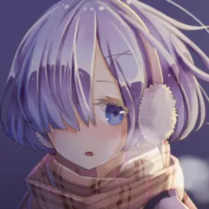

Witamy na stronie Isek015 Games!
Odkryj nasze najnowsze gry i projekty.
Profil CEO:
Imię i Nazwisko: Isek Zeropiętnaście
Doświadczenie: 727 lat w branży gier
Ulubiona gra: "Isek's Adventure"
Osiągnięcia: Twórca gier z serii Kacperniszon Love story które były nominowane do nagród Gier roku.
Coś o sobie:
Samozwańczy autor powieści wizualnych i geniusz programowania. Uczony przez samego sławnego Xaviera Hosinova.
Twórca gier z serii Kacperniszon Love story które były nominowane do nagród Gier roku.